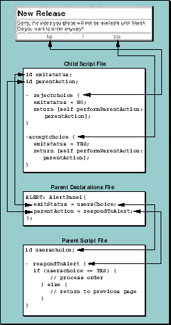

Table of Contents
Table of Contents  Next Section
Table of Contents
Next Section
Table of Contents  Previous Section
Previous Section
In the AlertPanel example shown in Figure 32, you saw how the parent component, in its declarations file, sets the attributes of the child component:
ALERT: AlertPanel {
alertString = alertTitle;
alertFontColor = "#A00000";
alertFontSize = 6;
infoString = alertDescription;
infoFontSize = 4;
infoFontColor = "#500000";
tableWidth = "50%";
};
Each of the AlertPanel component's attributes is set either statically (to a constant value) or dynamically (by binding the attribute's value to a variable or method invocation in the parent's code). Communication from the parent to the child is quite straightforward.For reusable components to be truly versatile, there must also be a mechanism for the child component to interact with the parent, either by setting the parent's variables or invoking its methods, or both. This mechanism must be flexible enough that a given child component can be reused by various parent components without having to be modified in any way. WebObjects provides just such a mechanism, as illustrated by the following example.
Consider an AlertPanel component like the one described above, but with the added ability to accept user input and relay that input to a parent component. The panel might look like the one in Figure 33.
Figure 33. An Alert Panel That Allows User Input
<HTML>The corresponding declarations file reveals two new attributes (indicated in bold):
<HEAD>
<TITLE>Alert</TITLE>
</HEAD>
<BODY>
<WEBOBJECT NAME = "ALERT"></WEBOBJECT>
</BODY>
</HTML>
Parent's Declarations File (excerpt)
ALERT: AlertPanel {
infoString = message;
infoFontSize = 4;
infoFontColor = "#500000";
alertString = "New Release";
alertFontColor = "#A00000";
alertFontSize = 6;
tableWidth = "50%";
parentAction = "respondToAlert";
exitStatus = usersChoice;
};
The parentAction attribute identifies a callback method, one that the child component invokes in the parent when the user clicks the Yes or No link. The exitStatus attribute identifies a variable that the parent can check to discover which of the two links was clicked. This attribute passes state information from the child to the parent. A reusable component can have any number of callback and state attributes, and they can have any name you choose.Now let's look at the revised child component. The template file for the AlertPanel component has to declare the positions of the added Yes and No hyperlinks. (Only excerpts of the implementation files are shown here.)
Child Component's Template File (excerpt)
<TD>The corresponding declarations file binds these declarations to scripted methods:
<WEBOBJECT name=NOCHOICE></WEBOBJECT>
</TD>
<TD>
<WEBOBJECT name=YESCHOICE></WEBOBJECT>
</TD>
Child Component's Declarations File (excerpt)
NOCHOICE: WOHyperlink {
action = rejectChoice;
string = "No";
};
YESCHOICE: WOHyperlink {
action = acceptChoice;
string = "Yes";
};
And the script file contains the implementations of the rejectChoice and acceptChoice methods:Child Component's Script File (excerpt)
id exitStatus;Note that exitStatus and parentAction are simply component variables. Depending on the method invoked, exitStatus can have the values YES or NO. The parentAction variable stores the name of the method in the parent component that will be invoked by the child. In this example parentAction identifies the parent method named "respondToAlert", as specified in the parent's declarations file.
id parentAction;
- rejectChoice {
exitStatus = NO;
return [self performParentAction:parentAction];
}
- acceptChoice {
exitStatus = YES;
return [self performParentAction:parentAction];
}
Note: You must enclose the name of the parent's action method in quotes.
Now, looking at the rejectChoice and acceptChoice method implementations, you can see that they are identical except for the assignment to exitStatus. Note that after a value is assigned to exitStatus, the child component sends a message to itself to invoke the parent's action method, causing the parent's respondToAlert method to be invoked. Since the parent's usersChoice variable is bound to the value of the child's exitStatus variable, the parent code can determine which of the two links was clicked and respond accordingly. Figure 34 illustrates the connections between the child and parent components.

Figure 34. Parent and Child Component Interconnections
ALERT: AlertPanel {
...
parentAction = "respondToAlert";
exitStatus = usersChoice;
};
Parent2's Declarations File (excerpt)
ALERT: AlertPanel {
...
parentAction = "okCancel";
exitStatus = result;
};
Parent3's Declarations File (excerpt)
ALERT: AlertPanel {
...
parentAction = "alertAction";
exitStatus = choice;
};
In summary, parent and child components communicate in these ways:A parent component can, in its declarations file, set child component attributes by:
Table of Contents Next Section